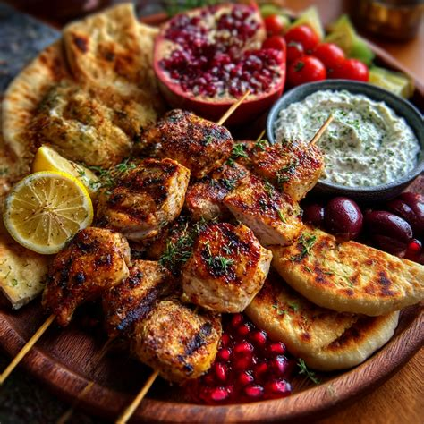
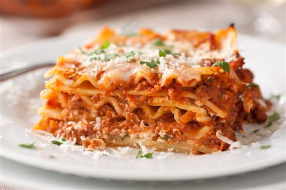
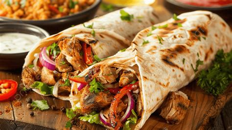
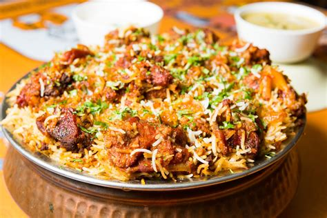
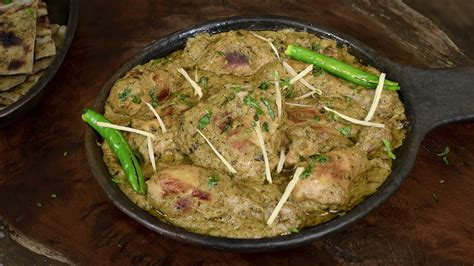
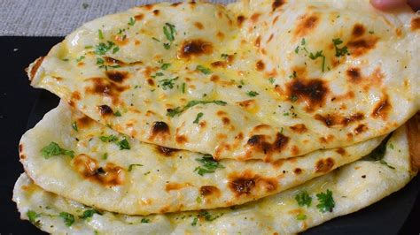
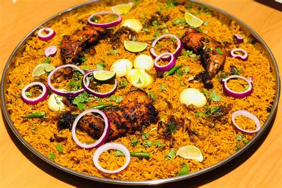
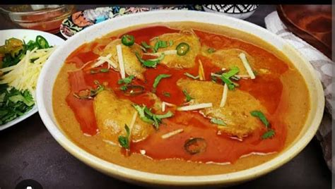

| Name | ``Description | Reference image (final product may not be identical as shown) |
Preparation time | Starters |
|---|---|---|---|
| Chicken Platter | A combination of multiple types of roasted, fried, grilled chicken, often served as a starter. Complemented with mayonnaise / spicy-mint chutney. |  |
30-40 minutes |
| Lasagna | Lasagna is a baked Italian pasta dish made by layering wide, flat pasta sheets with fillings such as ragù (meat and tomato sauce), béchamel sauce, vegetables, and cheeses like ricotta, mozzarella, and Parmesan. |  |
20-30 minutes |
| Shawarma | Shawarma does not need introduction, it is famous all over the globe for it's lightweight and delicious taste. |  |
10-15 minutes |
| Main Course | |||
| Biryani | Biryani is a delicious slow cooked, rice and meat dish originated from afghani cuisine. Today, Biryani is popular around the whole world. Biryani is known for its spice-rich, flavourful taste that you can not forget. |  |
5-10 minutes |
| Butter naan with Afghani Chicken (combo) | Afghani Chicken is a Curry withy rich taste, not spicy, not tangy but still considered best of all the curries. Eaten with Butter naan, which is Bread roasted in Butter. |   |
20 minutes |
| Mandi | Mandi is a dish originated from Middle East, known for its rich texture and juicy meat. Can be ordered in different Meat selection. |  |
20 minutes |
| Nahari | Juicy Bone soup to strengthen your joints and for a refreshing start again. |  |
10-15 minutes |